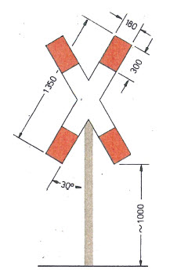
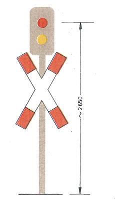
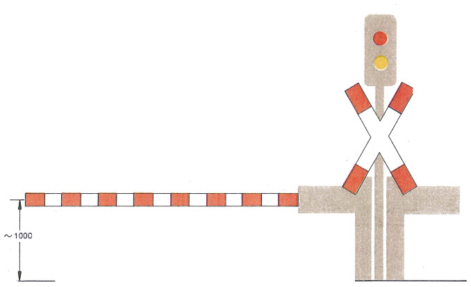
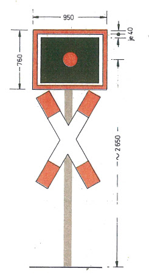
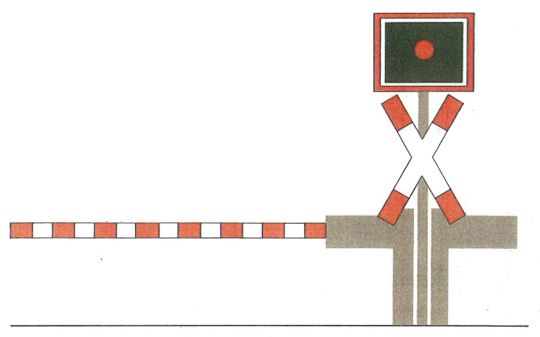

(Fundstelle: BGBl. I 1991, Nr. 30 Anlageband S. 15 - 19)
Bild 1
Andreaskreuz
|  | - 1.
Wenn das Andreaskreuz nur für den Straßenverkehr in einer abzweigenden Richtung gelten soll, ist dies durch ein Zusatzschild mit schwarzem Pfeil zu kennzeichnen. - 2.
Bei Gleisen mit elektrischer Fahrleitung sind die Andreaskreuze in der Mitte mit einem Blitzpfeil zu versehen. - 3.
In Ortschaften oder bei beengten Verhältnissen sind Abweichungen vom Höhenmaß “~ 1 000" zulässig.
|
Bild 2
Lichtzeichen
| | Farbfolge GELB-ROT |
|  | - 1.
Wenn Lichtzeichen nur für den Straßenverkehr in einer abzweigenden Richtung gelten sollen, sind sie in Pfeilform auszuführen. An Fußwegen dürfen die Lichtzeichen mit Fußgänger-Symbolen versehen werden. - 2.
Zusätzlich zu den Lichtzeichen dürfen Wecker oder andere hörbare Zeichen verwendet werden. - 3.
Bei mehrgleisigen Strecken sind Lichtzeichen nur in Verbindung mit Halbschranken oder Schranken zu verwenden. - 4.
In Ortschaften oder bei beengten Verhältnissen darf das Andreaskreuz neben oder über dem Lichtzeichen angebracht sein. Bei Lichtzeichen für Fußwege darf auf das Andreaskreuz verzichtet werden.
|
| | Siehe auch Erläuterungen zu Bild 1 |
Bild 3
Lichtzeichen mit Halbschranke oder Schranke

- 1.
Die Schrankenbäume müssen ausreichend erkennbar sein, solange sie bewegt werden oder geschlossen sind.
- 2.
Die Schraffen sind senkrecht auszuführen; sie dürfen bis zur Erneuerung schräg sein.
- 3.
Halbschranken sperren nur die Zufahrt auf den Bahnübergang; ihre Länge ist so zu bemessen, daß der Straßenverkehrsteilnehmer ungehindert den Bahnübergang räumen kann.
Siehe auch Erläuterungen zu den Bildern 1 und 2
Bild 4
Rotes Blinklicht

- 1.
Zusätzlich zum Blinklicht dürfen Wecker oder andere hörbare Zeichen verwendet werden.
- 2.
In Ortschaften oder bei beengten Verhältnissen darf das Andreaskreuz um 90° gedreht (quer) über dem Blinklicht angebracht und vom Höhenmaß “~ 2650” abgewichen werden.
- 3.
Ein Blinklicht in Pfeilform zeigt an, daß es nur für den Straßenverkehr in Richtung des Pfeiles gilt.
- 4.
Für besondere Blinklichter an Fußwegen sind Signalschirme mit einer Höhe von 400 mm und einer Breite von 500 mm zugelassen. Auf Andreaskreuze kann gemäß § 11 Abs. 3 verzichtet werden.
- 5.
An mehrgleisigen Strecken dürfen Bahnübergänge mit schachem Verkehr durch Blinklichter in Verbindung mit einer im Signalschirm angebrachten gelben Leuchtschrift “2 Züge” und Wecker oder andere hörbare Zeichen gesichert werden. Die zusätzlichen Sicherungen werden wirksam, wenn und solange der Bahnübergang für einen weiteren Zug gesperrt bleibt.
Siehe auch Erläuterungen zu Bild 1
Bild 5
Rotes Blinklicht mit Halbschranke

Siehe Erläuterungen zu den Bildern 1, 3 und 4